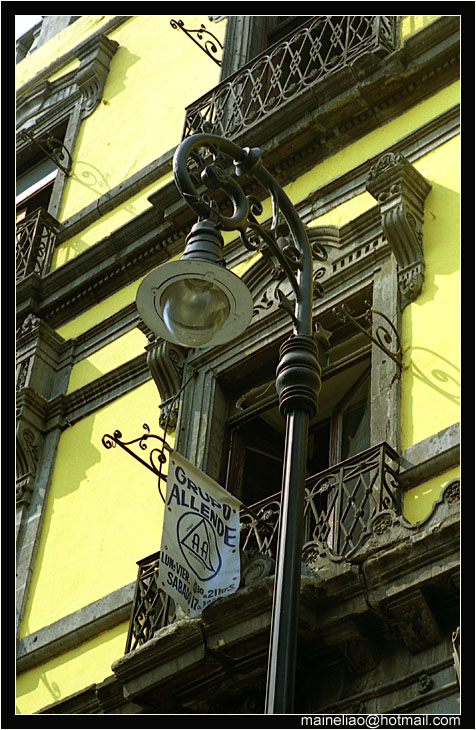

levenhe2015-09-04 08:074.92 分
操作性 5.00耐用性 5.00性价比 5.00解像力 4.50色彩还原 5.00机械结构 5.00
cybertron2015-06-18 18:084.83 分
操作性 5.00耐用性 5.00性价比 4.50解像力 5.00色彩还原 5.00机械结构 4.50
Luft2015-06-15 13:044.83 分
操作性 4.50耐用性 5.00性价比 5.00解像力 4.50色彩还原 5.00机械结构 5.00
追逐阿波罗2015-01-23 13:384.83 分
操作性 4.50耐用性 5.00性价比 4.50解像力 5.00色彩还原 5.00机械结构 5.00
cybertron2014-08-09 07:48
liuqing2272014-04-07 00:004.92 分
操作性 5.00耐用性 5.00性价比 5.00解像力 5.00色彩还原 4.50机械结构 5.00
jeshe2013-12-27 14:154.92 分
操作性 5.00耐用性 5.00性价比 5.00解像力 4.50色彩还原 5.00机械结构 5.00
ZeissIkonZI2013-11-23 19:005 分
操作性 5.00耐用性 5.00性价比 5.00解像力 5.00色彩还原 5.00机械结构 5.00
冰山一角生2013-08-15 23:384.67 分
操作性 5.00耐用性 4.50性价比 4.00解像力 4.50色彩还原 5.00机械结构 5.00
zhenghaifood2013-05-23 21:035 分
操作性 5.00耐用性 5.00性价比 5.00解像力 5.00色彩还原 5.00机械结构 5.00
CH334455662012-06-05 17:103.92 分
操作性 5.00耐用性 5.00性价比 2.00解像力 4.00色彩还原 3.00机械结构 4.50
lovetd2012-04-17 19:074.58 分
操作性 4.50耐用性 4.50性价比 5.00解像力 4.50色彩还原 5.00机械结构 4.00
sinceA402011-04-12 01:074.58 分
操作性 4.00耐用性 5.00性价比 5.00解像力 4.50色彩还原 4.50机械结构 4.50
美思康定2011-02-15 00:185 分
操作性 5.00耐用性 5.00性价比 5.00解像力 5.00色彩还原 5.00机械结构 5.00
lafuma2010-10-25 14:444.83 分
操作性 4.50耐用性 5.00性价比 5.00解像力 4.50色彩还原 5.00机械结构 5.00
gyrbf2010-10-20 19:515 分
操作性 5.00耐用性 5.00性价比 5.00解像力 5.00色彩还原 5.00机械结构 5.00
action1002010-06-18 10:49
action1002010-06-16 06:09
狗头天下2009-07-20 12:024.92 分
操作性 5.00耐用性 5.00性价比 5.00解像力 4.50色彩还原 5.00机械结构 5.00
MM72009-07-18 06:484.92 分
操作性 4.50耐用性 5.00性价比 5.00解像力 5.00色彩还原 5.00机械结构 5.00
狗头天下2008-10-13 19:26
anguso2008-06-13 11:024.83 分
操作性 4.00耐用性 5.00性价比 5.00解像力 5.00色彩还原 5.00机械结构 5.00
realblizzard2008-05-31 19:284.67 分
操作性 4.00耐用性 5.00性价比 4.50解像力 4.50色彩还原 5.00机械结构 5.00
漂泊天涯2008-03-11 10:144.67 分
操作性 4.00耐用性 5.00性价比 4.00解像力 5.00色彩还原 5.00机械结构 5.00
江山多娇2008-02-13 21:324.75 分
操作性 4.00耐用性 5.00性价比 5.00解像力 4.50色彩还原 5.00机械结构 5.00
roseburn2008-01-13 17:264.83 分
操作性 4.50耐用性 5.00性价比 5.00解像力 5.00色彩还原 5.00机械结构 4.50
上帝武装2007-09-22 22:054.5 分
操作性 4.50耐用性 4.50性价比 4.50解像力 4.50色彩还原 4.50机械结构 4.50
VENIVIDIVICI2007-09-01 04:484.67 分
操作性 3.00耐用性 5.00性价比 5.00解像力 5.00色彩还原 5.00机械结构 5.00
小虫2007-05-07 18:584.58 分
操作性 4.50耐用性 5.00性价比 4.50解像力 4.00色彩还原 4.50机械结构 5.00
尼康用家2007-05-04 16:334.67 分
操作性 4.50耐用性 4.50性价比 4.50解像力 4.50色彩还原 5.00机械结构 5.00
游走四方的狗2005-06-10 23:514.42 分
操作性 4.50耐用性 4.00性价比 5.00解像力 4.50色彩还原 4.50机械结构 4.00
suixz2005-05-06 13:514.75 分
操作性 5.00耐用性 5.00性价比 5.00解像力 4.00色彩还原 4.50机械结构 5.00
ohsmen2005-03-28 18:284.92 分
操作性 5.00耐用性 5.00性价比 5.00解像力 4.50色彩还原 5.00机械结构 5.00
上片用的马甲2005-02-25 22:464.67 分
操作性 5.00耐用性 5.00性价比 4.00解像力 4.00色彩还原 5.00机械结构 5.00
熊转悠注意2004-10-17 20:104.5 分
操作性 4.50耐用性 4.50性价比 4.50解像力 4.50色彩还原 4.50机械结构 4.50
horowitz2004-08-05 11:575 分
操作性 5.00耐用性 5.00性价比 5.00解像力 5.00色彩还原 5.00机械结构 5.00
精英之后2004-07-03 12:254.75 分
操作性 4.50耐用性 5.00性价比 5.00解像力 4.50色彩还原 4.50机械结构 5.00
三年半2004-07-01 01:104.58 分
操作性 4.50耐用性 5.00性价比 4.00解像力 4.50色彩还原 4.50机械结构 5.00
抹布2004-04-02 13:584.83 分
操作性 5.00耐用性 5.00性价比 5.00解像力 4.50色彩还原 4.50机械结构 5.00
anpiue2003-11-16 01:305 分
操作性 5.00耐用性 5.00性价比 5.00解像力 5.00色彩还原 5.00机械结构 5.00
古兜山2003-08-16 12:175 分
操作性 5.00耐用性 5.00性价比 5.00解像力 5.00色彩还原 5.00机械结构 5.00
MM72003-06-15 06:39
蔡斯迷2003-04-26 11:024.83 分
操作性 5.00耐用性 4.50性价比 5.00解像力 5.00色彩还原 5.00机械结构 4.50
梦深蓝2002-10-04 07:014.75 分
操作性 5.00耐用性 4.00性价比 5.00解像力 5.00色彩还原 5.00机械结构 4.50
135F2DC2002-05-02 14:264.83 分
操作性 4.50耐用性 4.50性价比 5.00解像力 5.00色彩还原 5.00机械结构 5.00
茄子2002-04-24 15:164.92 分
操作性 4.50耐用性 5.00性价比 5.00解像力 5.00色彩还原 5.00机械结构 5.00
Mike2002-04-17 10:184.5 分
操作性 4.00耐用性 5.00性价比 4.50解像力 4.00色彩还原 4.50机械结构 5.00

Jacobson2002-04-11 15:285 分
操作性 5.00耐用性 5.00性价比 5.00解像力 5.00色彩还原 5.00机械结构 5.00
锐2002-04-10 09:064.75 分
操作性 5.00耐用性 5.00性价比 5.00解像力 4.00色彩还原 4.50机械结构 5.00
1672002-04-09 14:174.33 分
操作性 4.50耐用性 5.00性价比 4.00解像力 3.50色彩还原 4.00机械结构 5.00